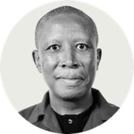

South Africa · Key player

Julius Malema
EFF leader
Updated · 4 coalition pieces tracked
Who is Julius Malema?
Julius Malema (EFF leader) is one of the key players in the coalition talks after South Africa’s 4 November 2026 local government elections.
What has Julius Malema said about the coalition talks?
- Proposed the ANC lead 30 of Limpopo’s 39 hung councils and the EFF nine. Story: Outside the metros, councils start to pick partners, and Limpopo’s ANC turns to the DA
- Before the vote, called coalition government the future of municipalities and the EFF its most stable partner. Story: Should one deal settle all eight metros?
- Wants the ANC to reconcile with its lost kids, the EFF, MK and SACP. Story: MK talks to everyone, the DA included, but says it wants like-minded partners
- Blames the ANC’s national deal with the DA for the results, and wants the ANC to reunite with the EFF, MK and SACP instead. Story: Will the coalition fights break the national unity government?
What is Julius Malema’s latest on the coalitions?
On 22 November 2026, Sunday World: ‘Take 30 and give us nine’: Malema’s Limpopo proposal. On the EFF’s podcast, Malema proposed that of Limpopo’s 39 hung councils, the ANC lead 30 and the EFF nine. Sunday World reports the ANC instead chose the DA as its main partner in the province.
Every piece we track, newest first
Sunday World · Podcast ‘Take 30 and give us nine’: Malema’s Limpopo proposalOn the EFF’s podcast, Malema proposed that of Limpopo’s 39 hung councils, the ANC lead 30 and the EFF nine. Sunday World reports the ANC instead chose the DA as its main partner in the province.
EWN · Statement EFF calls on ANC to reconsider DA coalitionAt the IEC results centre, Malema called on the ANC to reconcile with its lost kids, the EFF, MK and SACP, and stand against their common political enemies. EWN reports the EFF wants to join the talks, but on its own terms.
Inside Politics · Speech Malema blames the ANC-DA coalition as the EFF reels from lossesMalema blamed the ANC’s decision to govern nationally with the DA for strengthening white supremacy, saying the local results reflected that deal, and said progressive parties must unite rather than split their support.
Jacaranda FM · Speech Malema tells voters EFF is a ‘stable coalition partner’At the EFF’s final rally in Soweto, Malema called the EFF the most stable coalition partner and said coalition government is the future of municipalities. He said the EFF respects coalitions but will not protect wrongdoing, even if it costs the party positions.
Preamble summarises published reporting and links to every original. Julius Malema does not write for Preamble, and this page is not endorsed by them.